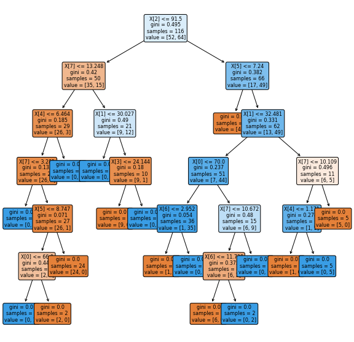

Contents
#UTS PENAMBANGAN DATA B
##IMPLEMENTASI MENGGUNAKAN KNN
from google.colab import drive
drive.mount('/content/drive')
KeyboardInterruptTraceback (most recent call last)
<ipython-input-1-d5df0069828e> in <module>
1 from google.colab import drive
----> 2 drive.mount('/content/drive')
/usr/local/lib/python3.7/dist-packages/google/colab/drive.py in mount(mountpoint, force_remount, timeout_ms, readonly)
104 timeout_ms=timeout_ms,
105 ephemeral=True,
--> 106 readonly=readonly)
107
108
/usr/local/lib/python3.7/dist-packages/google/colab/drive.py in _mount(mountpoint, force_remount, timeout_ms, ephemeral, readonly)
123 if ephemeral:
124 _message.blocking_request(
--> 125 'request_auth', request={'authType': 'dfs_ephemeral'}, timeout_sec=None)
126
127 mountpoint = _os.path.expanduser(mountpoint)
/usr/local/lib/python3.7/dist-packages/google/colab/_message.py in blocking_request(request_type, request, timeout_sec, parent)
169 request_id = send_request(
170 request_type, request, parent=parent, expect_reply=True)
--> 171 return read_reply_from_input(request_id, timeout_sec)
/usr/local/lib/python3.7/dist-packages/google/colab/_message.py in read_reply_from_input(message_id, timeout_sec)
95 reply = _read_next_input_message()
96 if reply == _NOT_READY or not isinstance(reply, dict):
---> 97 time.sleep(0.025)
98 continue
99 if (reply.get('type') == 'colab_reply' and
KeyboardInterrupt:
#mengimpor atau mengambil library pada pandas, numpy, seaborn, dan matplotlib
import pandas as pd
import numpy as np
import seaborn as sns
import matplotlib.pyplot as plt
%matplotlib inline
url = '/content/drive/MyDrive/datamining/tugas/dataR2.csv'
dataset = pd.read_csv(url)
dataset.head()
| Age | BMI | Glucose | Insulin | HOMA | Leptin | Adiponectin | Resistin | MCP.1 | Classification | |
|---|---|---|---|---|---|---|---|---|---|---|
| 0 | 48 | 23.500000 | 70 | 2.707 | 0.467409 | 8.8071 | 9.702400 | 7.99585 | 417.114 | 1 |
| 1 | 83 | 20.690495 | 92 | 3.115 | 0.706897 | 8.8438 | 5.429285 | 4.06405 | 468.786 | 1 |
| 2 | 82 | 23.124670 | 91 | 4.498 | 1.009651 | 17.9393 | 22.432040 | 9.27715 | 554.697 | 1 |
| 3 | 68 | 21.367521 | 77 | 3.226 | 0.612725 | 9.8827 | 7.169560 | 12.76600 | 928.220 | 1 |
| 4 | 86 | 21.111111 | 92 | 3.549 | 0.805386 | 6.6994 | 4.819240 | 10.57635 | 773.920 | 1 |
dataset.shape
(116, 10)
#create a dataframe with all training data except the target column
X = dataset.drop(columns=['Classification'])
#check that the target variable has been removed
X.head()
| Age | BMI | Glucose | Insulin | HOMA | Leptin | Adiponectin | Resistin | MCP.1 | |
|---|---|---|---|---|---|---|---|---|---|
| 0 | 48 | 23.500000 | 70 | 2.707 | 0.467409 | 8.8071 | 9.702400 | 7.99585 | 417.114 |
| 1 | 83 | 20.690495 | 92 | 3.115 | 0.706897 | 8.8438 | 5.429285 | 4.06405 | 468.786 |
| 2 | 82 | 23.124670 | 91 | 4.498 | 1.009651 | 17.9393 | 22.432040 | 9.27715 | 554.697 |
| 3 | 68 | 21.367521 | 77 | 3.226 | 0.612725 | 9.8827 | 7.169560 | 12.76600 | 928.220 |
| 4 | 86 | 21.111111 | 92 | 3.549 | 0.805386 | 6.6994 | 4.819240 | 10.57635 | 773.920 |
#separate target values
y = dataset['Classification'].values
#view target values
y[0:5]
array([1, 1, 1, 1, 1])
from sklearn.model_selection import train_test_split
#split dataset into train and test data
X_train, X_test, y_train, y_test = train_test_split(X, y, test_size=0.2, random_state=1, stratify=y)
from sklearn.neighbors import KNeighborsClassifier
# Create KNN classifier
knn = KNeighborsClassifier(n_neighbors = 3)
# Fit the classifier to the data
knn.fit(X_train,y_train)
KNeighborsClassifier(n_neighbors=3)
#show first 5 model predictions on the test data
knn.predict(X_test)[0:5]
array([1, 2, 1, 2, 2])
from sklearn.model_selection import cross_val_score
import numpy as np
#create a new KNN model
knn_cv = KNeighborsClassifier(n_neighbors=3)
#train model with cv of 5
cv_scores = cross_val_score(knn_cv, X, y, cv=5)
#print each cv score (accuracy) and average them
print(cv_scores)
print('cv_scores mean:{}'.format(np.mean(cv_scores)))
[0.5 0.52173913 0.47826087 0.47826087 0.60869565]
cv_scores mean:0.5173913043478261
from sklearn.model_selection import GridSearchCV
#create new a knn model
knn2 = KNeighborsClassifier()
#create a dictionary of all values we want to test for n_neighbors
param_grid = {'n_neighbors': np.arange(1, 25)}
#use gridsearch to test all values for n_neighbors
knn_gscv = GridSearchCV(knn2, param_grid, cv=5)
#fit model to data
knn_gscv.fit(X, y)
GridSearchCV(cv=5, estimator=KNeighborsClassifier(),
param_grid={'n_neighbors': array([ 1, 2, 3, 4, 5, 6, 7, 8, 9, 10, 11, 12, 13, 14, 15, 16, 17,
18, 19, 20, 21, 22, 23, 24])})
#check top performing n_neighbors value
knn_gscv.best_params_
{'n_neighbors': 23}
#check mean score for the top performing value of n_neighbors
knn_gscv.best_score_
0.5688405797101449
from sklearn.preprocessing import LabelEncoder
from sklearn.preprocessing import StandardScaler
from sklearn.model_selection import train_test_split
from sklearn.neighbors import KNeighborsClassifier
from sklearn.metrics import classification_report
from sklearn.metrics import confusion_matrix
from sklearn.metrics import ConfusionMatrixDisplay
MENGGUNAKAN METODE DESSICION TREE
import numpy as np # linear algebra
import pandas as pd # data processing, CSV file I/O (e.g. pd.read_csv)
import matplotlib.pyplot as plt
from sklearn.metrics import accuracy_score
from sklearn import tree
import seaborn as sns
url = '/content/drive/MyDrive/datamining/tugas/dataR2.csv'
dataset = pd.read_csv(url)
dataset.head()
| Age | BMI | Glucose | Insulin | HOMA | Leptin | Adiponectin | Resistin | MCP.1 | Classification | |
|---|---|---|---|---|---|---|---|---|---|---|
| 0 | 48 | 23.500000 | 70 | 2.707 | 0.467409 | 8.8071 | 9.702400 | 7.99585 | 417.114 | 1 |
| 1 | 83 | 20.690495 | 92 | 3.115 | 0.706897 | 8.8438 | 5.429285 | 4.06405 | 468.786 | 1 |
| 2 | 82 | 23.124670 | 91 | 4.498 | 1.009651 | 17.9393 | 22.432040 | 9.27715 | 554.697 | 1 |
| 3 | 68 | 21.367521 | 77 | 3.226 | 0.612725 | 9.8827 | 7.169560 | 12.76600 | 928.220 | 1 |
| 4 | 86 | 21.111111 | 92 | 3.549 | 0.805386 | 6.6994 | 4.819240 | 10.57635 | 773.920 | 1 |
y = dataset["Classification"]
X = dataset.drop(columns=["Classification"])
clf = tree.DecisionTreeClassifier(criterion="gini")
clf = clf.fit(X, y)
#plt the figure, setting a black background
plt.figure(figsize=(10,10))
#create the tree plot
a = tree.plot_tree(clf,
rounded = True,
filled = True,
fontsize=8)
#show the plot
plt.show()

url = '/content/drive/MyDrive/datamining/tugas/dataR2.csv'
dataset = pd.read_csv(url)
dataset.head()
| Age | BMI | Glucose | Insulin | HOMA | Leptin | Adiponectin | Resistin | MCP.1 | Classification | |
|---|---|---|---|---|---|---|---|---|---|---|
| 0 | 48 | 23.500000 | 70 | 2.707 | 0.467409 | 8.8071 | 9.702400 | 7.99585 | 417.114 | 1 |
| 1 | 83 | 20.690495 | 92 | 3.115 | 0.706897 | 8.8438 | 5.429285 | 4.06405 | 468.786 | 1 |
| 2 | 82 | 23.124670 | 91 | 4.498 | 1.009651 | 17.9393 | 22.432040 | 9.27715 | 554.697 | 1 |
| 3 | 68 | 21.367521 | 77 | 3.226 | 0.612725 | 9.8827 | 7.169560 | 12.76600 | 928.220 | 1 |
| 4 | 86 | 21.111111 | 92 | 3.549 | 0.805386 | 6.6994 | 4.819240 | 10.57635 | 773.920 | 1 |
from sklearn.preprocessing import LabelEncoder
enc = LabelEncoder()
dataset['Age']=enc.fit_transform(dataset['Age'].values)
dataset['BMI']=enc.fit_transform(dataset['BMI'].values)
dataset['Glucose']=enc.fit_transform(dataset['Glucose'].values)
dataset['Insulin']=enc.fit_transform(dataset['Insulin'].values)
dataset['HOMA']=enc.fit_transform(dataset['HOMA'].values)
dataset['Leptin']=enc.fit_transform(dataset['Leptin'].values)
dataset['Adiponectin']=enc.fit_transform(dataset['Adiponectin'].values)
dataset['Resistin']=enc.fit_transform(dataset['Resistin'].values)
dataset['MCP.1']=enc.fit_transform(dataset['MCP.1'].values)
dataset.head()
| Age | BMI | Glucose | Insulin | HOMA | Leptin | Adiponectin | Resistin | MCP.1 | Classification | |
|---|---|---|---|---|---|---|---|---|---|---|
| 0 | 48 | 33 | 70 | 3 | 0 | 14 | 68 | 37 | 53 | 1 |
| 1 | 83 | 5 | 92 | 9 | 13 | 15 | 26 | 4 | 57 | 1 |
| 2 | 82 | 30 | 91 | 33 | 34 | 50 | 108 | 45 | 67 | 1 |
| 3 | 68 | 14 | 77 | 11 | 7 | 21 | 41 | 66 | 104 | 1 |
| 4 | 86 | 11 | 92 | 19 | 23 | 4 | 20 | 56 | 93 | 1 |
dataset.info()
<class 'pandas.core.frame.DataFrame'>
RangeIndex: 116 entries, 0 to 115
Data columns (total 10 columns):
# Column Non-Null Count Dtype
--- ------ -------------- -----
0 Age 116 non-null int64
1 BMI 116 non-null int64
2 Glucose 116 non-null int64
3 Insulin 116 non-null int64
4 HOMA 116 non-null int64
5 Leptin 116 non-null int64
6 Adiponectin 116 non-null int64
7 Resistin 116 non-null int64
8 MCP.1 116 non-null int64
9 Classification 116 non-null int64
dtypes: int64(10)
memory usage: 9.2 KB
data_array=dataset.drop(columns='Classification')
data_array.head()
| Age | BMI | Glucose | Insulin | HOMA | Leptin | Adiponectin | Resistin | MCP.1 | |
|---|---|---|---|---|---|---|---|---|---|
| 0 | 17 | 33 | 1 | 3 | 0 | 14 | 68 | 37 | 53 |
| 1 | 47 | 5 | 19 | 9 | 13 | 15 | 26 | 4 | 57 |
| 2 | 46 | 30 | 18 | 33 | 34 | 50 | 108 | 45 | 67 |
| 3 | 35 | 14 | 5 | 11 | 7 | 21 | 41 | 66 | 104 |
| 4 | 49 | 11 | 19 | 19 | 23 | 4 | 20 | 56 | 93 |
data_kelas=dataset['Classification']
data_kelas.head(100)
0 1
1 1
2 1
3 1
4 1
..
95 2
96 2
97 2
98 2
99 2
Name: Classification, Length: 100, dtype: int64
from sklearn.model_selection import train_test_split
from sklearn.metrics import accuracy_score,confusion_matrix, classification_report
from sklearn.tree import DecisionTreeClassifier
xtrain, xtest, ytrain, ytest = train_test_split(data_array, data_kelas, test_size=0.2, random_state=500)
tree_data=DecisionTreeClassifier(random_state=500)
tree_data.fit(xtrain, ytrain)
DecisionTreeClassifier(random_state=500)